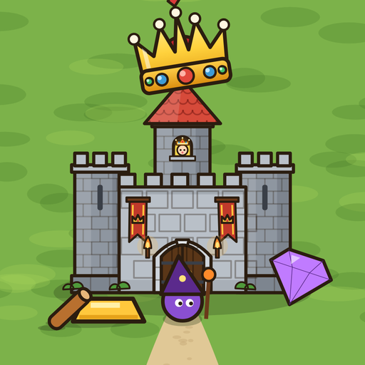

avdev78
Independent mobile games and Windows software.
Games

Builder's Kingdom
A king on horseback stacks wood and gold to build his towers and defend his kingdom.
Windows software
Restart Monitor
Keeps track of how long your PC has been running and reminds you to restart it when it's time.
Sound Blaster Command Switcher
Switch between headphones and speakers with a double-click on the taskbar icon (or Ctrl+Alt+*), without opening Sound Blaster Command. Free and offline, for Sound Blaster cards (tested on the AE-5 Plus).
Contact: avdev78@gmail.com